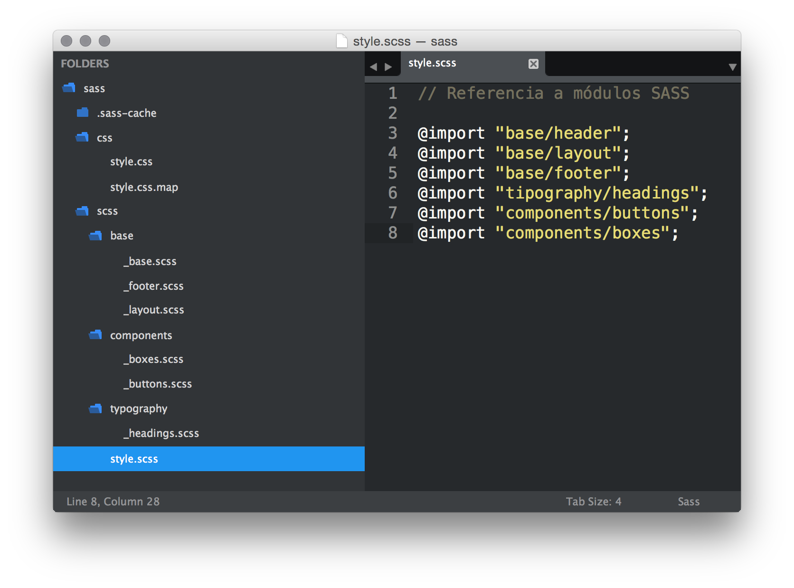

Las unidades de medida en CSS pueden dividirse en dos grandes grupos: unidades absolutas y unidades relativas
La sintaxis para declarar una medida siempre será igual: un número seguido de la unidad correspondiente. Algunas propiedades CSS aceptan valores negativos.
Las unidades absolutas son las más directas, están relacionadas a una medida física. La más utilizada es el pixel pero hay varias más:
px (píxel)
mm (milimetro)
cm (centímetro, 10 millimeters)
in (pulgada, 2.54 centímetros)
pt (punto, 1/72 de pulgada)
pc (pica, 12 puntos)
Las unidades relativas son un poco más complicadas ya que su valor no es fijo sino que dependen de la medida de otro elemento. También pueden dividirse en tres grupos más pequeños: unidades relativas al tamaño de fuente, unidades relativas al viewport y porcentajes.
em
Es un número relativo al font-size del elemento. Si se aplica a la misma propiedad font-size se calculará en base al font-size heredado.
rem
Hace referencia al font-size del elemento root (normalmente el <html>). Si se aplica sobre este usara de base su valor inicial.
ex
Representa la x-height del elemento fuente, normalmente la altura del caracter "x" en minúsculas.
ch
Representa el ancho del carácter "0".
vh
1/100 del alto del viewport.
vw
1/100 del ancho del viewport.
vmin
1/100 del valor más bajo entre el alto y ancho del viewport.
vmax
1/100 del valor más alto entre el alto y ancho del viewport.
Podemos asignar una unidad de medida porcentual con un valor seguido del signo "%" (ej: 50%). El contexto que se utilizará para calcular el porcentaje variará dependiendo a que propiedad se aplique.
Si se aplica al font-size, el porcentaje será relativo al font-size del elemento padre.
Si se aplica al width, margin o padding, será relativo a las medidas de su contenedor.

SASS nos permite añadir funcionalidades que no existen en CSS y que amplian enormemente sus posibilidades.
Una variable es un registro donde guardamos un dato que necesitaremos aplicar en diferentes partes de nuestro código.
Para poder utilizar una variable primero hemos de crearla y asignarle un valor. A este proceso se le denomina declaración de variables
$primaryColor: red;
$secondaryColor: blue;
Una vez declarada, podemos reutilizar las variables en tantos lugares de nuestro código como necesitemos.
h1 {
color: $primaryColor;
}
h2 {
color: $secondaryColor;
}
scss
$primaryColor: red;
h1 {
color: $primaryColor;
}
css
h1 {
color: red;
}
SASS permite anidar uno o varios selectores CSS dentro de otro.
Esto nos permitirá tener nuestro código más organizado y realizar cambios con mayor facilidad.
Podemos utilizar & para hacer referencia al elemento padre y de esa manera lograr selectores más complejos.
scss
.slider-container {
float: left;
img {
border: none;
display: block;
}
}
css
.slider-container {
float: left;
}
.slider-container img {
border: none;
display: block;
}
scss
.logo {
color: red;
header & {
color: orange;
}
}
css
.logo { color: red; }
header .logo { color: orange; }
scss
.tab {
color: red;
&.selected {
color: orange;
}
}
css
.tab { color: red; }
.tab.selected { color: orange; }
scss
a {
color: red;
&:hover {
color: orange;
}
}
css
a { color: red; }
a:hover { color: orange; }
Una práctica habitual si trabajamos con un sistema de nomenclatura de componentes (como BEM), es hacer uso de la anidación de Sass para organizar los mismos.
scss
.block {
color: red;
&__element {
color: orange;
&--modifier {
color: lime;
}
}
}
css
.block { color: red; }
.block__element { color: orange; }
.block__element--modifier { color: lime; }
Para agilizar el proceso de edición y depuración de errores evitaremos trabajar con un único archivo CSS. En lugar de eso crearemos diferentes archivos SASS que separarán en módulos nuestro código.
Finalmente, todos los archivos SASS los combinaremos en un sólo CSS para evitar realizar múltiples llamadas HTTP que ralentizen la carga de nuestro site.
Para crear esa estructura modularizada utilizaremos @import en nuestro archivo style.scss.
El resultado será un style.css con todo el código importado.
// Contenido de style.scss
@import "base/header";
@import "base/layout";
@import "base/footer";
@import "tipography/headings";
@import "components/buttons";
@import "components/boxes";
Para indicar en SASS que un archivo .scss concreto no debe generar un .css correspondiente, le añadimos un "_" delante del nombre.
De esta forma el contenido de este fichero solo se procesará cuando sea importado por otro.
La estructura de archivos quedaría así:
La importancia de modularizar con @import
Un proyecto web se compone de múltiples elementos. Creando un archivo SASS para cada uno facilitamos el mantenimiento y el debug de errores.
Una propuesta de estructura sería:
Refactoriza tu proyecto en SASS y sube los cambios a Git
Deberás de modularizar la estructura CSS actual de tu proyecto en módulos SASS separados según tipología.